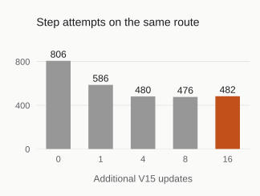
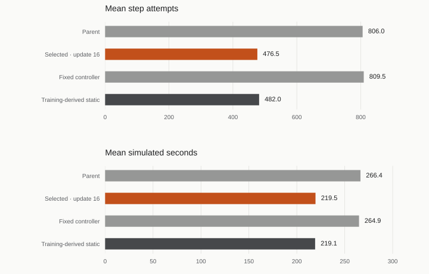

The task
A desk becomes an obstacle course
An alarm clock sits on a stack of books. To turn it off, Mochi has to climb up, reach the clock and make contact. Then it has to get down, close a drawer, close a laptop and turn a globe to its target. A small mistake early in the route can leave the later chores unfinished.
Mochi is a miniature Unitree G1 in MuJoCo, a physics simulator that measures motion and contact. The project asks whether evidence from a failed attempt can improve the next one. We test that through matched physical runs.
The project became a supervised post-training study: hold the physical system and available actions fixed, then train the model choosing its next move. Tinker updates that model; MuJoCo measures its choices. Behind the runs, past.dev carries findings forward, Exa finds research sources and Modal runs comparisons in parallel.
Before the desk
The first improvement did not travel well
Before the desk, the hackathon version used a supported robot arm to push a puck into a target. This gave us a small problem for the complete research loop: observe a failure, research an explanation, propose a controller change, test alternatives and retain the result.
At first, that loop looked promising. On twelve held-out puck scenarios, the research-selected controller succeeded eight times; the starting controller managed two, and conventional search managed six. Then we increased friction and mass. The research-selected controller succeeded only once in eight attempts, while conventional search succeeded six times. The gain did not transfer reliably to the changed conditions. Tinker supplied research decisions here through inference; this first experiment did not update model weights. Original results and limits.
The searches also had access to different controller families, preventing us from attributing the difference to research intelligence, web search or memory. A promising result under one set of conditions was a starting point, not evidence of reliable transfer.
After the hackathon, the physical problem grew. We replaced the rounded body with a detailed Unitree G1, added the four chores and furnished the workspace with Sand3D objects. MuJoCo remained the authority for motion and contact. Blender and the browser could make the run visible, but rendering recorded transforms could not decide whether a task had succeeded.
The desk linked the failures together: a good reach could not rescue a fall on the way to the station, and a quick recovery could leave the robot poorly positioned for the next chore. We began measuring complete routes alongside separate walking, manipulation and recovery tests. The film above is a development milestone, not a matched checkpoint test.
Training the decisions
What the model was actually learning
Mochi already had a library of engineered controllers for walking, object contact and arm withdrawal. The learned part was the choice: given a structured observation of the robot’s state, which option should it use next?
We used Tinker to post-train Qwen3.5-4B with LoRA, which updates a small set of model parameters. The native gait network, balance controller and manipulation primitives stayed fixed during checkpoint comparisons. The decision model’s choices ran through MuJoCo’s actuators, where reaching the station, valid contact and safe completion could be measured.
We physically compared actions to create supervision, calculated gradients with Tinker and performed optimizer updates. Each saved model version—a checkpoint—then made decisions in new physical runs. V12 training code · Current training code · Tinker API.
The native gait network turns walking commands into leg motion. It stayed fixed: a visible change in the route could come from choosing a different walking strategy, without learning new motor torques.
In V15, every update trained walking, clock, drawer, laptop, globe and recovery decisions. The experiment tested whether supervision from measured outcomes could teach the decision model to choose better options.
The first trained comparisons
Getting the whole route to finish
The first trained comparisons were about getting through the route. V8 ran 64 new updates. Its development-selected checkpoint completed four of four held-out routes, while its parent completed none. Separate recovery tests went from twelve valid recoveries in sixteen attempts to sixteen in sixteen. But a fixed controller also completed all four routes. Training improved on that parent without demonstrating an advantage over the fixed alternative. Archived V8 study.
V12 brought the comparison into the book-traversal study. We ran 32 new optimizer updates, but the development evaluation selected update 1. More updates did not automatically mean a better checkpoint. The replay keeps updates 0, 1, 8 and 32 on the same development scenario so you can inspect the separate, uninterrupted attempts.
After choosing the checkpoint, we tested six held-out scenarios. The parent finished three full sequences. The selected checkpoint finished all six within the specified smoothness limits; the fixed controller finished five. This was a measurable improvement in completion within that study.
Full-sequence completion within the specified smoothness limits. Six scenarios, one small simulation study. No hardware validation. Read the assessment.
Can the trained model finish where its parent falls short?

Recorded simulation trajectories
Six final-test pairs, plus a development scenario with intermediate checkpoints. Viewing notes follow your checkpoint selection.Component tests narrowed down V12’s gain. When we changed walking alone, the parent fell; the selected model chose differently and finished. In the manipulation and recovery checks, both picked the same profiles. V12 did not demonstrate learned improvements in manipulation or recovery.
We stored the evaluation and its component-test limits in past.dev. A review stage recalled them and wrote a qualified conclusion, which the research stage could read before the next campaign.
The runs that changed the question
A finish was not always a valid finish
An earlier V11 audit had exposed another problem: the objects reached their targets, but Mochi also hit the clock with its wrist, knee and hip. The verifier had missed those contacts. We invalidated the apparent passes, kept the recordings, corrected the verifier and cancelled that proposed training campaign before it produced gradients. The controller had to be physically feasible before further training. Contact audit and rejected attempts.
Nor did every later training run improve completion. V13 added sixteen updates, yet both the parent and selected checkpoint finished only two of four fresh final-test scenarios. Fixed and training-derived static choices each finished three. Its final memory handoff also stopped when recall did not return the required source. We retained the numerical result and marked the workflow incomplete. Preserved follow-up evidence · Execution record.
The studies used different environments and test sets. Their success counts cannot form one learning curve: we can compare checkpoints within a matched study, but a newer version number is not evidence of improvement.
A separate engineering change
Before more training, change the way it turns
Before V15, we changed the navigation controller itself. Instead of tracking the route laterally, V14 turns Mochi toward the next corridor, walks it forward and then aligns it with the task pose. This gave us a separate engineering comparison, without updating the decision model.
On one matched route, both versions completed all four chores. The turn-first version spent much more of its flat-desk travel aligned with its body heading, but took about fourteen seconds longer. The heading metric counts movement within 25 degrees of body heading, averaged over a gait cycle; it excludes stationary turns and book traversal. The change improved this alignment measure, not every measure of efficiency.
Previous route vs. turn-first
Matched navigation comparison
Compare the same route before and after the controller refinement.We then put turn-first navigation into both the V15 parent and every checkpoint. From that point on, it stayed fixed. Any parent-to-checkpoint difference in V15 would have to be evaluated within that shared setup.
V15 / One matched training sequence
Watching the steps fall, then checking the result
By V15, the question had changed from “can Mochi finish?” to “can it finish with less wasted movement?” We ran 16 new Tinker optimizer updates and 96 domain-gradient calculations, holding the native gait, physical controller library, scene, route and evaluation rules fixed. Checkpoints 0, 1, 4, 8 and 16 each passed all three development scenarios within the declared quality limits.
Training allocation and research receipts
Before training, V15 recalled the earlier assessment from past.dev and made one Exa search about velocity-command tracking and corrective footsteps. After recalling the sourced hypothesis, the design stage chose twelve walking and twelve recovery examples per update, plus four for each object task. The measured set contained 48 labeled observation records that could be reused during training. Research decisions and API receipts.
Watch one route change across training
Start with update 0 in the recorded development sequence below. This is the parent checkpoint, already trained for 105 cumulative updates before V15. The labels 0, 1, 4, 8 and 16 count additional V15 optimizer updates. They do not compare an untrained robot with a trained one.
On development scenario 92000, the parent completed the route in 806 steps and 265.4 seconds. After one update, its walking choice on the flat desk and its clock setting changed. The new run still passed the quality checks, but needed 586 steps and 237.8 seconds: 27.3% fewer steps. Its recovery choices had not changed in this pair. Checkpoint and measurement evidence.
Move through updates 0, 1, 4, 8 and 16 in the replay. Watch the approach to each station as well as the reach. The starting state, scene, task order and playback speed match. These are five runs on one development scenario; the replay at the top instead shows a fresh final-test scenario.

First declared development case, seed 92000. Steps include turning, book traversal and alignment. A failed run’s short time or low step count does not establish improvement.
Follow the same route through five checkpoints
From 806 steps to roughly 480
Start at update 0, then compare updates 1 and 4. Updates 8 and 16 show the plateau on this route. Viewing notes explain what changed and offer moments to inspect.After four updates
By update 4, the model made different choices at all twelve decision points in this case, including every arm recovery. It completed the route in 480 steps and 216.7 seconds, still within the quality limits. That shows the combined effect of those choices; it does not tell us how much each one contributed. We also compared the models from twelve identical supported states, producing 24 valid diagnostic branches separate from the uninterrupted routes.
The supervision rewarded measured performance inside the frozen controller library. Walking labels favored fewer steps, then time, among physically valid actions. Task and recovery labels balanced elapsed time against arm travel. The model was learning which engineered option to select from the available choices.
Then the improvement levelled off on this route. Update 8 used 476 steps and 216.4 seconds; update 16 used 482 steps and 217.2 seconds. Those two checkpoints made the same categorical choices here. We have not explained the small measurement difference as a new learned behavior, and this is not a steadily improving curve.
Choosing a checkpoint beyond one good run
The best checkpoint on one route was not necessarily the one to take forward. Our predeclared selection rule considered all three development scenarios and chose update 16. Across that set, it averaged 485.3 steps and 218.1 physical seconds, against 805.3 steps and 265.5 seconds for the parent. We froze that choice before opening four fresh final-test scenarios.
Does the improvement survive fresh tests?
On the fresh tests, every policy passed all four scenarios within the quality limits. The selected checkpoint averaged 476.5 step attempts and 219.5 simulated seconds, against 806.0 steps and 266.4 seconds for its parent. We also tested the fixed controller and a static policy derived from training data. The static policy uses predetermined controller choices instead of asking the model to choose at each state.
Across the four paired final scenarios, step attempts fell by 40.9% on average and simulated completion time by 17.6%, exceeding the predeclared 20% step-reduction target. These are results from four cases in one fixed layout, not a claim about performance in a new environment.

The strongest limit came from the simpler alternative. The training-derived static policy averaged 482.0 steps and 219.1 seconds—close in step count and slightly faster than the selected model. It made the same controller choice in 46 of 48 corresponding decisions; only the laptop profiles on seeds 93000 and 93003 differed. We learned more efficient choices in this setting, but did not establish a meaningful advantage from adapting the choice to each state. Small cost differences under identical choice vectors remain unexplained. Completed numerical assessment.
The cost of moving faster
Fewer steps also did not mean every motion got better. In the final scenarios, average arm-joint travel per successful recovery rose from 5.54 to 6.93 radians. Torso roll RMS rose slightly, from 0.271 to 0.279 degrees. Both remained inside the declared limits, but the result does not show lower arm travel or smoother motion on every measure.
Where the time went
Separate matched-state tests helped locate the time savings. On the laptop approach, the compared walking choices used 324 versus 172 steps and 40.6 versus 22.0 seconds. Across four recovery states, total recovery time fell from 6.65 to 5.30 seconds while joint travel rose from 22.15 to 26.77 radians. These branch totals diagnose individual choices; they are not another continuous route.
How we counted steps and described uncertainty
The declared target was a 20% step reduction. On these four final scenarios, paired reductions averaged 40.9% in steps and 17.6% in time. The descriptive paired bootstrap intervals were 39.4%–41.8% for steps and 15.7%–18.7% for time. With only four fixed-layout cases, those intervals do not establish broad generalization: even 4/4 completion has an approximately 51%–100% Wilson interval at 95% confidence.
Throughout the study, “steps” means measured footstep attempts, including turns, book traversal, alignment and unfinished attempts. We only compare efficiency when both routes finish within the quality limits. A failed run cannot win by stopping early: it stays in the completion denominator. Contacts, balance, time and arm travel are reported alongside the step count. Frozen study protocol.
Execution, resource use and the final memory handoff
At the end of V15, we wrote the measurements to past.dev, recalled them for review, stored a qualified conclusion and recalled that conclusion in the research stage. The audit recorded six writes, seven logical recalls, four writing identities, four verified reading identities and five within-campaign cross-role handoffs. One recall retrieved the earlier assessment across campaigns. The private-canary denial test passed, and no ingestions were left pending.
The full campaign used 204 physical rollouts and 10.341 function CPU-hours, within limits of 224 rollouts, eighteen hours and four concurrent workers. Tinker recorded 217,812 training-token presentations. Those numbers describe execution and reuse of examples, not billed credits.
What Mochi learned—and what comes next
With the physical system held fixed, post-training changed the decision model’s controller choices and reduced the steps needed to finish these routes. The invalid contacts and flat results help define the conditions under which that improvement counts.
The open question is whether those choices remain useful when the layout, conditions or tasks change—and whether adapting to each state can beat the simple static policy. The puck experiment showed why transfer needs its own test. For now, we can watch and measure the change within this controlled setting.
Remembering what happened
How a failed step became evidence for the next run
One recurring failure was a foot that had not cleared the edge of a book before descent. A replay made the stumble visible. Joint positions, foot contacts, body orientation and task outcomes made it possible to describe what happened precisely enough to test a change.
We kept exact trajectories and numerical results in artifact storage. past.dev held the working record around them: observations, hypotheses, sources, experiment results and conclusions with their qualifications. Each record carried an author, timestamp, audience and source ID, with its type distinguishing a proposed explanation from a measured result.
The shared record grew to include those book-edge failures, tests of staged clearance and shorter foot placements, and findings about the clock approach and arm withdrawal. The point was to give the next stage evidence it could inspect, instead of asking it to infer the history from a success count.
The research stage recalled those observations before searching for methods. The design stage then recalled the sourced hypothesis before deciding how to divide the training examples. This left a trace from a physical failure to a proposed intervention. Inspect the memory code.
That handoff led the design stage to choose more recovery supervision than the balanced alternative. Both options still included walking and all four manipulation tasks. The decision record identifies which recalled sources informed the choice.
For V12, each update presented sixteen recovery examples, eight walking examples and four examples for each manipulation task. The same measured examples could be reused across updates. These counts describe training presentations, not new physical experiments.
Memory ingestion and source verification
A successful write does not mean the finding is ready to read back. Before a dependent read, we wait for ingestion to finish. Pending ingestion IDs are journaled so an interruption does not lose track of the handoff.
On recall, we check that returned source IDs match the record requested, then retrieve the exact payload from the experiment journal. If the required source is missing, the handoff stops rather than substituting an unrelated result.
Shared findings and private review notes use different audiences. A synthetic private record was tested from outside its audience; the audit recorded the expected denial. Ingestion and journaling code.
From research to evidence
Testing the possible fix before training on it
A foot catches a book edge; a descent becomes unstable; the hand overshoots; the arm takes too long to withdraw. Those measurements set the research question. Exa searches were recorded with the query, source URL, retrieval time and proposed mechanism. A paper could suggest a change to try, but finding it did not establish that the change would help Mochi. Search and memory implementation.
To find out, we tried the available actions from matching physical states in MuJoCo, running the comparisons on Modal. In V15, four training scenarios each supplied twelve decision points. We tested three actions at each point, then continued the parent model’s route with a guard against invalid choices. That meant 144 action branches plus four continuous collection sequences: 148 physical rollouts to collect the training evidence.
These were small CPU simulations, with at most four workers running at once. We retained seeds, durations, physical outcomes, checkpoint identifiers and resource receipts. The distinction between an action branch and a whole route mattered: the fastest choice from one state could still make a later part of the route worse. Physical experiment code.
METHODS AND DATA
Sources and artifacts
- Completed V15 assessment · Numerical results and component testsFull final cohort, static-control audit, motion tradeoffs and actual resource totals.
- Current development evidence · Latest recording manifestActual checkpoint identity, measured step/time changes, and the completed final-test status.
- Completed Tinker and Modal executionThe 16-update campaign, four-policy final test, component checks and final memory handoff.
- Completed V12 assessmentDevelopment selection, six-scenario final test, and component checks.
- V12 training execution · V12 evaluation execution
- V12 checkpoint manifest · V14 navigation manifest
- V13 negative result and incomplete handoff
- Replay provenanceSeparate study sources and hashes of the unmodified recordings.
- Scene attribution · Robot license · Desk assets · Three.js license
This is a state-observation simulation study. Browser replays interpolate recorded physics samples; the development film is a separate screen recording. Displayed simulation time excludes remote inference waits. The clips illustrate particular runs; the assessment counts failures across the cohort.